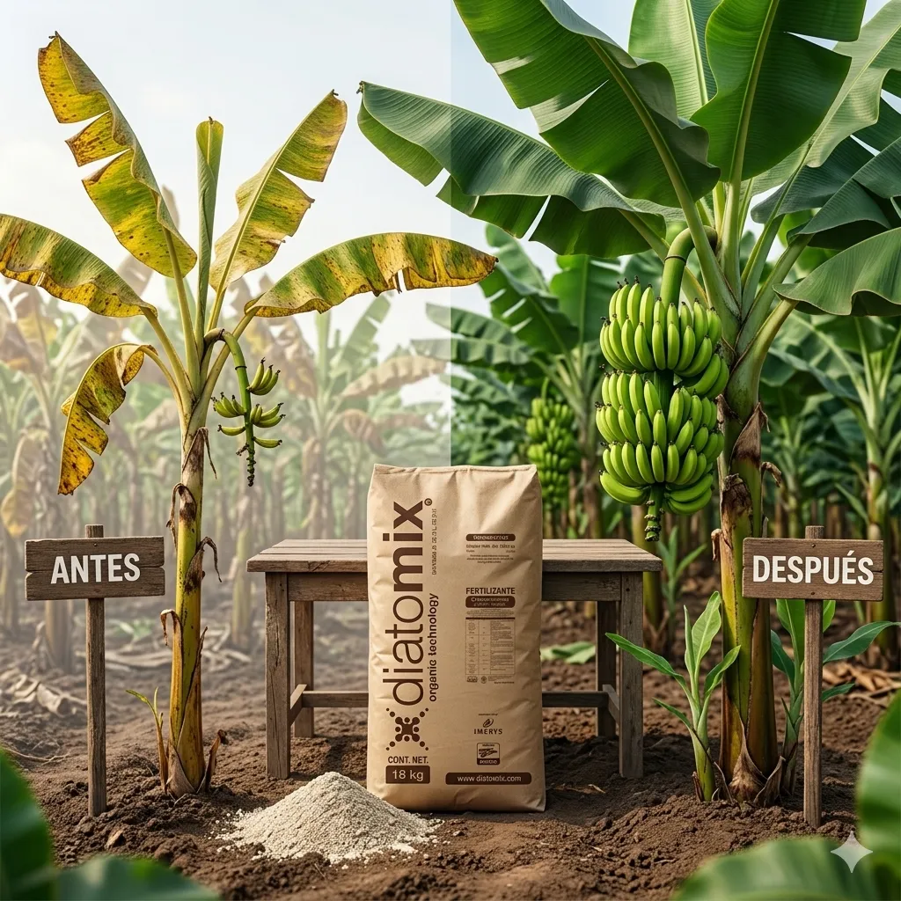

En tan solo 30 días — aunque ya hayas probado de todo y el suelo siga sin responder.
Tu finca produce menos de lo que debería. Ya lo sabes, Pero la solución no está en gastar más en fungicidas, ni en cambiar todo lo que ya haces. Está en lo que el suelo lleva años pidiéndote sin que nadie te lo dijera.

Invierte en fertilizantes cada ciclo, aplica lo que le recomienda la agro, y sin embargo las plantas no se ven como antes — lo que significa que está gastando plata que no está llegando a donde tiene que llegar, y eso se siente directo en el bolsillo al final de la cosecha.
Le rechazan cajas en la empacadora por bajo calibre o fruta manchada — lo que significa que usted trabajó semanas enteras para que le paguen menos, o peor, para que le devuelvan lo que cosechó, y eso duele más que cualquier mal clima.
Gasta cada vez más en fungicidas para controlar la Sigatoka o la moniliasis, pero los focos siguen apareciendo — lo que significa que está corriendo detrás del problema en lugar de prevenirlo, y ese ciclo no para solo.
El suelo ya no aguanta como antes: se compacta, se acidifica, y cada año le cuesta más levantarlo — lo que significa que la finca que levantó con años de trabajo se está desgastando, y eso no es algo que se pueda ignorar si usted quiere dejarle algo bueno a su familia.
Nadie le ha explicado bien qué está pasando debajo de la tierra, y cada vez que prueba un producto nuevo termina igual o peor — lo que significa que ya no sabe en quién confiar, y esa desconfianza le ha costado tiempo y dinero que no sobra.
En Agropecuaria Yanez hemos acompañado a los productores de la zona por años. Y en ese tiempo hemos aprendido algo claro: el problema más silencioso en los suelos no es la falta de fertilizante. Es la falta de silicio biodisponible.
Sin silicio, las plantas no pueden aprovechar bien el NPK que usted ya aplica. Las paredes celulares se debilitan. La fruta sale de menor calibre. Los hongos encuentran la puerta abierta. Y el suelo se degrada más rápido de lo normal.
Diatomix es un mejorador de suelos organo-mineral a base de dióxido de silicio de origen natural. No es un fungicida. No reemplaza su programa de nutrición. Se integra a lo que usted ya hace y lo potencia.
Actúa en tres frentes al mismo tiempo:
Endurece las paredes celulares para que la fruta salga con mejor calibre y presentación.
Con su pH neutro (7–10), reduciendo la acidificación y la compactación.
Cuando el suelo está equilibrado, el NPK llega a donde tiene que llegar.
Es un mejorador de suelos de acción progresiva que equilibra el pH y activa los minerales que el suelo ya tiene, para que sus plantas aprovechen al máximo cada dólar que usted invierte en fertilización — lo que significa que deja de tirar plata y empieza a ver resultados reales en cada cosecha.
Fortalece las paredes celulares de la planta desde la raíz hacia arriba, para que la fruta llegue a la empacadora con el calibre y la presentación que exigen los exportadores — lo que significa que usted llega con cajas limpias, cobra completo, y construye una reputación que los compradores no olvidan.
Reduce la necesidad de aplicaciones correctivas de fungicidas, porque una planta con paredes celulares fuertes es naturalmente más resistente a la Sigatoka y a la moniliasis — lo que significa que usted sale del ciclo de "apagar incendios" y empieza a trabajar tranquilo, sin urgencias que le comen el tiempo y el bolsillo.
Se aplica con los mismos equipos y el mismo programa que usted ya usa, sin cambiar rutinas ni comprar nada adicional — lo que significa que no hay curva de aprendizaje, no hay riesgo operativo, y puede empezar desde el primer ciclo sin complicaciones.
Es no tóxico, no cancerígeno y no deja residuos en la fruta ni en el suelo, lo que significa que usted, sus trabajadores y su familia pueden estar tranquilos, y que la finca cumple sin problema con las exigencias de trazabilidad de los exportadores más estrictos.
Otros productores han pagado hasta $280 por saco en insumos de corrección de suelos que requieren aplicaciones masivas, seguimiento técnico especializado y semanas de espera para ver si algo cambió. Algunos han gastado ese dinero tres, cuatro veces en el mismo problema — porque atacaban el síntoma, no la causa.
"Yo era de los que no probaba nada nuevo sin antes ver con mis propios ojos. Le pregunté al vecino, vi sus matas, y fui directo a la agro. Eso fue hace dos cosechas. Hoy las cajas me salen mejor calibradas y gasto menos en fungicidas."
"El suelo en mi finca ya estaba cansado. Tres aplicaciones de Diatomix y las plantas se ven diferentes. Mi encargado fue el primero en decirme: 'patrón, algo cambió aquí'."
"Lo que más me gustó es que no tuve que cambiar nada de lo que ya hacía. Solo agregué Diatomix a mi programa y empezó a trabajar solo."
No solo respaldamos el producto: respaldamos su tranquilidad.
Si aplica Diatomix siguiendo el programa que le indica el equipo de Agropecuaria Yanez y en los primeros 60 días no nota mejora visible en sus plantas, en el calibre de su fruta o en la condición de su suelo — le devolvemos su dinero sin preguntas, sin trámites, sin resentimientos.
Porque llevamos años ganándonos su confianza, y no vamos a arriesgarla por ningún producto que no cumpla lo que promete.
Yanez no vende productos al azar. Cada insumo que recomendamos ha pasado por nuestra revisión técnica y — más importante — por la prueba real de los productores de la zona.
Llevamos más de una década acompañando fincas de banano y cacao en Los Ríos, El Oro, Guayas y Esmeraldas. Conocemos sus suelos. Conocemos sus ciclos. Conocemos lo que funciona aquí y lo que no.
Cuando Yanez recomienda algo, lo hace porque lo ha visto funcionar. Diatomix no es la excepción.
Tres bonos de acompañamiento técnico que aseguran que usted vea resultados reales desde el primer ciclo.
Cuéntenos cómo está su finca hoy y nuestro equipo técnico le dice exactamente cómo y cuándo aplicar Diatomix para su tipo de cultivo y su ciclo actual. Sin citas, sin esperas, directo al grano.
Le entregamos un programa sencillo que muestra cómo incorporar Diatomix a lo que ya aplica, para que desde la primera semana sepa exactamente qué, cuándo y en qué dosis — sin adivinanzas.
Un especialista de Yanez estará disponible por WhatsApp durante el primer mes para resolver cualquier duda, ajustar dosis si es necesario y asegurarse de que vea resultados reales en su finca.
Su garantía de satisfacción está respaldada. Empiece desde el primer ciclo sin riesgo ni complicaciones.
El precio de lanzamiento de $160 por saco de 18 kg — con los tres bonos incluidos — es una oferta de entrada. A medida que más productores de la zona adopten Diatomix, este precio subirá.
Si usted espera a "la próxima cosecha" para probar, esa cosecha llegará igual que la anterior: con las mismas cajas rechazadas, los mismos costos en correctivos, y el mismo suelo que no da todo lo que podría.
Seamos directos: si no toma esta decisión hoy, ¿en un mes su suelo va a estar mejor solo? Probablemente no. Seguirá haciendo lo mismo y obteniendo lo mismo. La diferencia entre el productor al que los vecinos le preguntan "¿qué estás usando tú?" y el que sigue buscando respuestas está en una sola decisión.
Esta es esa decisión.